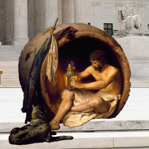
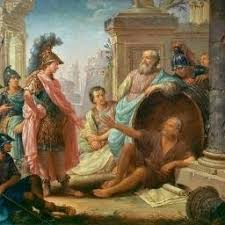
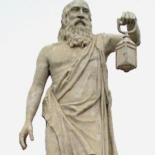
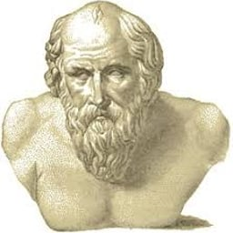
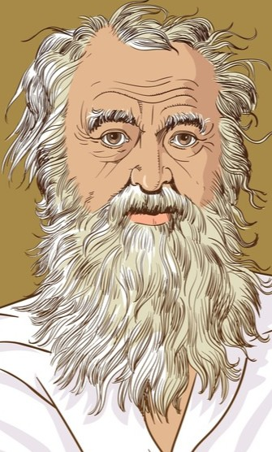

Život
Raný život
Diogenes se narodil kolem roku 412 př. n. l. ve městě Sinope, které se nacházelo na pobřeží Černého moře. Jeho otec Hicesias byl údajně bankéř, ale Diogenes se brzy dostal do problémů, když jeho rodina byla zapletena do skandálu s falšováním měny. To ho donutilo opustit Sinope a hledat nový začátek v Athénách.
Život v Athénách
Po příchodu do Athén se stal žákem Antisthena, zakladatele kynické školy. Diogenes přijal kynický životní styl, který zahrnoval odmítání luxusu, askezi a návrat k přirozenosti. Byl známý svými výstředními činy, například bydlením v sudu, chozením po tržišti s lampou „hledaje čestného člověka“, nebo pohrdáním autoritami včetně Platóna a Alexandra Velikého.
Kynismus
Diogenes byl jedním z hlavních představitelů kynické filozofie. Hlásal návrat k jednoduchému životu v souladu s přírodou, odpor proti společenským normám a hodnotám, jako je bohatství a moc. Podle něj je skutečné štěstí dosažitelné pouze prostřednictvím ctnosti a nezávislosti na materiálních věcech.
Známé činy a anekdoty
- Bydlel v sudu, aby demonstroval svou oddanost jednoduchému životu.
- Odpověděl Alexandru Velikému, když se ho ptal, co pro něj může udělat: „Ustup mi ze slunce.“
- Nosil lampu za bílého dne, tvrdíc, že „hledá čestného člověka“.
Vliv
- Na stoickou filozofii: Stoikové převzali mnoho myšlenek od kyniků, včetně důrazu na sebekontrolu a nezávislost.
- Na moderní kritiku společnosti: Diogenova filozofie inspirovala anarchisty, minimalisty a kritiky konzumerismu.
- Na literaturu a umění:
- Diogenes se objevil v dílech antických autorů jako Diogenés Laertios.
- Je častým tématem maleb a soch, zejména ve scéně s Alexandrem Velikým.
Galerie




Sud
